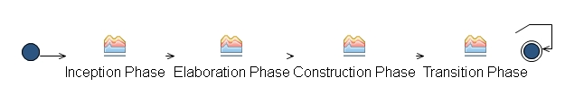

Capability Pattern: Project Governance Lifecycle
This capability pattern includes activities and tasks pertaining to executing project governance.
Description
Work Breakdown Structure
Team Allocation
Work Product Usage
Workflow

Work Breakdown
Licensed Materials - Property of IBM
© Copyright IBM Corp. 1987, 2014. All Rights Reserved.